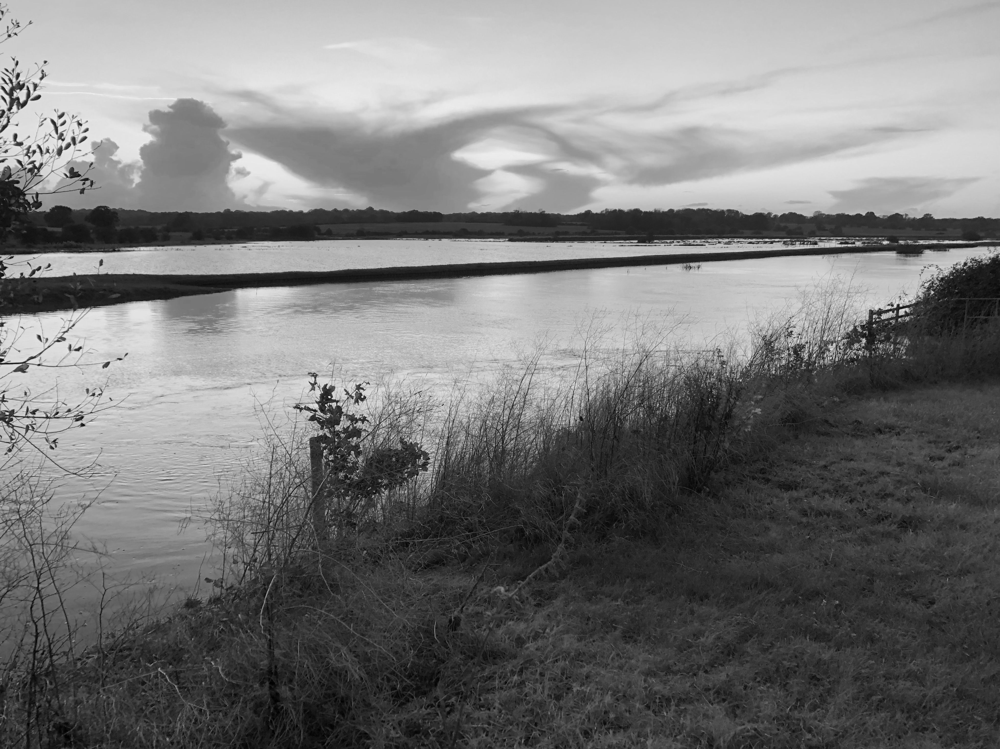

Water Water Everywhere
....nor any drop to drink.
An article published in Outlook on Oxney Magazine, October 2025.

Surely there is plenty? We are so used to water just flowing from the tap - and after all the same stuff falls from the sky in a seemingly limitless supply. But unlike rainwater collected in butts for our gardens, the water we get from the tap for everyday use is in short supply and has been through expensive processes to reach us at considerable environmental cost.
At a recent lively Climate Conversation we discussed all things watery. We started with the carbon implications of our increasing water use and how we might use less. 6% of UK greenhouse gas emissions can be ascribed to water use. 90% of which is in domestic use and half of that is our hot water use - baths, showers, washing up etc. The most effective way to reduce the carbon emissions associated with using water is to use less. The average use per person per day in the UK is 138 litres and generally it seems people in the UK use more than neighbouring European countries. Interestingly those with water meters average 122 litres a day, those without 177 litres a day. Awareness of the amount we use clearly helps.
And the financial cost - apparently water bills are set to rise by 36% in the next 5 years to pay for upkeep and repair of the infrastructure we depend on and for the increased quantities we need.
We hear that clean water is getting scarcer and is expected to become a real problem by 2055. The reasons for this are: Higher temperatures, less rainfall and increased evaporation from reservoirs: Population growth and ever greater demand: New technologies, eg data farms using large amounts of water cool equipment: Distribution losses - leaky pipes: Insufficient water storage to meet the demand - not enough reservoirs.
So what can we do about it? Suggestions range from: less hose use, more garden water storage, fewer baths, shorter showers, even cold showers! Could we learn anything from people living with little or no piped water, could we link up with other communities?
Of course here on The Isle of Oxney we are surrounded by water - or it feels like that at times, like in early 2024. Water is an important part of our low lying landscape, with levels managed skillfully and often invisibly by the people from the Environment Agency. Our stretch of the Rother is itself a delicate ecosystem for wildlife which also serves as a holding tank for water coming down the river before it can be released into the sea at the Scots Float Sluice just outside Rye - timed to suit the tides. The wild swimmers who swim all year round in the Rother report that it is relatively clean although the amount of green algae has been increasing, (seen more this year in the ditches from which water is pumped up into the Rother). Strandliners, a voluntary organisation who monitor water quality, have recently carried out a survey of the Rother. They measure ammonia and phosphate run off from farming, the water temperature, water flow and wildlife. Strandliners' findings are to be published soon and will give a useful and publicly available insight into the real quality of our River Rother.
Elsewhere run off from farming has had disastrous impacts on rivers including the Wye on the Welsh borders where toxic waste, largely from free range chicken farms, has all but killed the river and it is no longer safe to swim in. Waste water and sewage discharging into our rivers has been a increasing and well-publicised problem where sewage works become overcharged in times of heavy rainfall caused by erratic weather patterns which lead to discharge of raw sewage into rivers and the sea. Also many houses in rural areas are not on mains drainage and have variable quality sewage disposal arrangements, discharging into fields and ditches and eventually into the rivers.
The Ouse in Sussex has an impressive River Ouse Charter. The Charter has the backing of Lewes District Council and The Sussex Wildlife Trust among others and does carry some weight. Should we have a charter to protect the Rother? Would it have any impact and does our river need rights? a subject for focussed discussion in the near future perhaps.